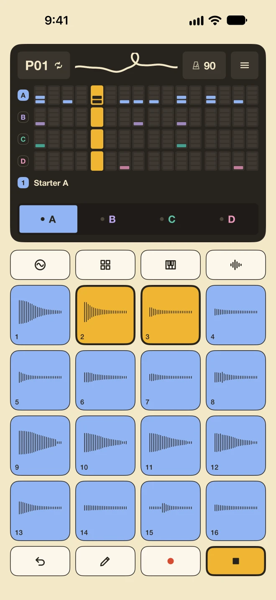

Main screen controls
Four mode keys above the pads change what they do. Four making keys below the pads let you edit, record, and play.

Mode keys
Tap a mode key to leave it on. Tap it again to turn it off. Hold a mode key to use it until you lift your finger. The previous pad mode then returns.
- 1. FX
- The pads become sixteen effects for the selected rack. Hold an effect pad to apply it until you let go.
- 2. PATTERN
- Tap PATTERN, then tap a pad to switch to its pattern. Hold PATTERN and tap the pattern pads in order to build a chain. Tap the pattern number in the display to open Chain.
- 3. MELODY
- Play a sound on the selected rack first. MELODY lets you play that rack’s last sound at sixteen notes in the project key. Set the key in Chain.
- 4. SOUND
- Tap a pad to choose its sound. Hold a pad to sample into it until you lift your finger. The full recording goes into your Library.
Making keys
- 5. UNDO
- Tap to undo the latest edit. Hold to redo it.
- 6. WRITE
- Tap WRITE to leave it on, or hold it to edit until you lift your finger. The pads become the sixteen steps of the last sound you played, or the last effect if FX is on. Tap a step to add it or tap a lit step to clear it.
- 7. REC
- Tap to arm recording, then play the pads. Tap again to stop recording. Hold REC to record as you play until you release it.
- 8. PLAY
- Tap to start or stop the current pattern or chain.
On the display
Tap the pattern number for Chain or the tempo for Mix. For a guided walkthrough, open the menu at the top right and choose How it works.